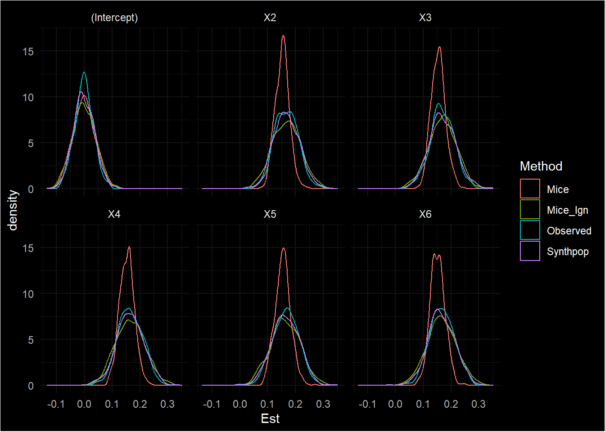

library(mice)
library(synthpop)
library(furrr)
library(purrr)
library(dplyr)
library(magrittr)
library(ggplot2)Mice parametric synthesis
Parametric synthesis with mice yields biased and overcovering results.
Parameter specifications
N <- 500
P <- 6
S <- matrix(0.5, P, P) # covariance matrix
diag(S) <- 1In due time, we will regress \(X_1\) on \(X_2\), \(X_3\), \(X_4\), \(X_5\) and \(X_6\). Given this covariance matrix, this yields regression coefficients
\[ (S_{-1,-1}' S_{-1,-1})^{-1} S'_{-1,-1} S_{1,-1} = \beta \] where \(S_{-1, -1}\) is the covariance matrix excluding the first row and first column, \(S_{-1,-1}'\) is its transpose, and \(S_{-1, 1}\) is the column vector of the covariances of \(X_1\) with \(X_2\) to \(X_6\). This yields \(\beta = \begin{bmatrix} 0.167 & 0.167 & 0.167 & 0.167 & 0.167 \end{bmatrix}\), with population level effect size \[ R^2 = \boldsymbol{1}'_5 (\beta \beta' \odot S_{-1,-1}) \boldsymbol{1}_5 \] with \(\boldsymbol{1}_5\) a length-five column vector of ones.
Generate data
nsim <- 500
set.seed(123)
plan(multisession)
datlist <- map(1:nsim,
~rnorm(N*P) |>
matrix(N,P) %*% chol(S) |>
data.frame())Create synthetic data
synth_mice <- future_map(datlist, ~ mice(.x,
m = 5,
maxit = 1,
method = "norm",
where = make.where(.x, "all"),
print = F) |>
complete("all"),
.options = furrr_options(seed = TRUE))
synth_mice2 <- future_map(datlist, function(x) {
new_x <- matrix(NA, nrow(x), ncol(x), dimnames = list(NULL, names(x)))
pred <- make.predictorMatrix(x)
imp <- mice(rbind(x, new_x),
m = 5,
method = "norm",
maxit = 1,
predictorMatrix = +lower.tri(pred),
ignore = rep(c(FALSE, TRUE), each = nrow(x)),
print = F)
complete(imp, "all") |>
map(~ .x[(nrow(x) + 1):(2*nrow(x)),])
}, .options = furrr_options(seed = TRUE))
synth_synthpop <- future_map(datlist, ~ syn(.x,
m = 5,
method = "norm",
print.flag = F)$syn,
.options = furrr_options(seed = TRUE))Inferences
coverage <- function(est, true) {
est |>
mutate(True_Est = rep(true, nrow(est)/length(true))) |>
group_by(Var) |>
summarize(True_Est = mean(True_Est),
Imp_Est = mean(Est),
SE = mean(SE),
Cov = mean(Low < True_Est & True_Est < Upp))
}
true_inf <- map_dfr(datlist, function(x) {
fit <- lm(X1 ~ X2 + X3 + X4 + X5 + X6, x) |>
summary()
coefs <- fit$coefficients
df <- fit$df[2]
data.frame(Var = rownames(coefs),
Est = coefs[,1],
SE = coefs[,2],
Low = coefs[,1] - qt(0.975, df) * coefs[,2],
Upp = coefs[,1] + qt(0.975, df) * coefs[,2])
})
mice_inf <- map_dfr(synth_mice, function(x) {
fit <- map(x, ~ lm(X1 ~ X2 + X3 + X4 + X5 + X6, .x)) |>
pool(rule = "reiter2003") %$%
pooled
data.frame(Var = fit[,1],
Est = fit[,3],
SE = sqrt(fit[,6]),
Low = fit[,3] - qt(0.975, fit[,8]) * sqrt(fit[,6]),
Upp = fit[,3] + qt(0.975, fit[,8]) * sqrt(fit[,6]))
})
mice2_inf <- map_dfr(synth_mice2, function(x) {
fit <- map(x, ~ lm(X1 ~ X2 + X3 + X4 + X5 + X6, .x)) |>
pool(rule = "reiter2003") %$%
pooled
data.frame(Var = fit[,1],
Est = fit[,3],
SE = sqrt(fit[,6]),
Low = fit[,3] - qt(0.975, fit[,8]) * sqrt(fit[,6]),
Upp = fit[,3] + qt(0.975, fit[,8]) * sqrt(fit[,6]))
})
synthpop_inf <- map_dfr(synth_synthpop, function(x) {
fit <- map(x, ~ lm(X1 ~ X2 + X3 + X4 + X5 + X6, .x)) |>
pool(rule = "reiter2003") %$%
pooled
data.frame(Var = fit[,1],
Est = fit[,3],
SE = sqrt(fit[,6]),
Low = fit[,3] - qt(0.975, fit[,8]) * sqrt(fit[,6]),
Upp = fit[,3] + qt(0.975, fit[,8]) * sqrt(fit[,6]))
})Coverage
True data
coverage(true_inf, c(0,1,1,1,1,1)/6) |> print.df()Registered S3 method overwritten by 'httr':
method from
print.response rmutil| Var | True_Est | Imp_Est | SE | Cov |
|---|---|---|---|---|
| (Intercept) | 0.000 | -0.001 | 0.034 | 0.946 |
| X2 | 0.167 | 0.167 | 0.044 | 0.964 |
| X3 | 0.167 | 0.168 | 0.044 | 0.944 |
| X4 | 0.167 | 0.166 | 0.044 | 0.952 |
| X5 | 0.167 | 0.166 | 0.044 | 0.946 |
| X6 | 0.167 | 0.168 | 0.044 | 0.950 |
Mice synthetic
coverage(mice_inf, c(0,1,1,1,1,1)/6) |> print.df()| Var | True_Est | Imp_Est | SE | Cov |
|---|---|---|---|---|
| (Intercept) | 0.000 | -0.002 | 0.044 | 0.970 |
| X2 | 0.167 | 0.153 | 0.049 | 0.998 |
| X3 | 0.167 | 0.154 | 0.049 | 1.000 |
| X4 | 0.167 | 0.154 | 0.049 | 1.000 |
| X5 | 0.167 | 0.155 | 0.049 | 1.000 |
| X6 | 0.167 | 0.152 | 0.049 | 0.998 |
Second mice approach to synthetic data
Note that with this approach, we specify the ignore parameter to make sure the imputation models are not affected by the synthetic data.
coverage(mice2_inf, c(0,1,1,1,1,1)/6) |> print.df()| Var | True_Est | Imp_Est | SE | Cov |
|---|---|---|---|---|
| (Intercept) | 0.000 | 0.000 | 0.041 | 0.938 |
| X2 | 0.167 | 0.168 | 0.052 | 0.966 |
| X3 | 0.167 | 0.169 | 0.052 | 0.950 |
| X4 | 0.167 | 0.165 | 0.052 | 0.946 |
| X5 | 0.167 | 0.163 | 0.052 | 0.952 |
| X6 | 0.167 | 0.166 | 0.052 | 0.946 |
Synthpop synthetic
coverage(synthpop_inf, c(0,1,1,1,1,1)/6) |> print.df()| Var | True_Est | Imp_Est | SE | Cov |
|---|---|---|---|---|
| (Intercept) | 0.000 | -0.001 | 0.038 | 0.956 |
| X2 | 0.167 | 0.167 | 0.048 | 0.964 |
| X3 | 0.167 | 0.169 | 0.048 | 0.944 |
| X4 | 0.167 | 0.165 | 0.048 | 0.950 |
| X5 | 0.167 | 0.164 | 0.048 | 0.950 |
| X6 | 0.167 | 0.165 | 0.048 | 0.950 |
So, we see that whereas inferences on the true data, the synthetic data generated with synthpop and the synthetic data generated with mice by using the ignore parameter are unbiased, inferences from the data generated with mice are biased. Apart from that, they are also overcovering (with the same pooling rules as used for synthpop). This implies that the variance using the regular mice method without specifying the ignore parameter is too small, resulting in too many values close to the center of the sampling distribution.
Visualize results
bind_rows(Observed = true_inf,
Mice = mice_inf,
Mice_Ign = mice2_inf,
Synthpop = synthpop_inf,
.id = "Method") |>
ggplot(aes(x = Est, col = Method)) +
geom_density() +
ggdark::dark_theme_minimal() +
facet_wrap(~Var)